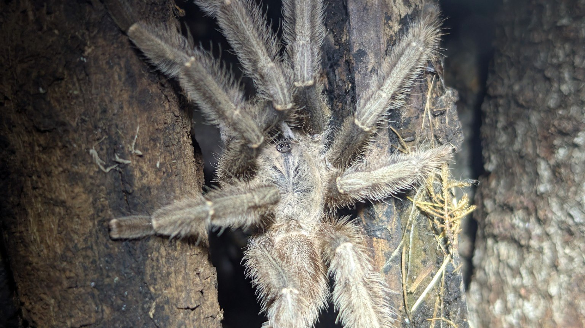

Former collection · In memory
Phormingochilus hatihati
A male from my former collection
He lived in my collection, reached maturity, and later passed away. These photographs document how he looked before and after his final molt.

Former collection record
Two stages of his life.
All four photographs are of the same spider. The earlier pictures show his darker appearance before the final molt, and the later ones show him as a mature male.
Before his final molt


After his final molt

These are photographs of an individual I previously kept. He is no longer alive, and this profile is part of the collection archive, not the current resident list.
Species context
The Sulawesi tarantula.
Phormingochilus hatihati is a theraphosid from Sulawesi, Indonesia. The species was formally described in 2024. Both the name and distribution can be checked in the World Spider Catalog.